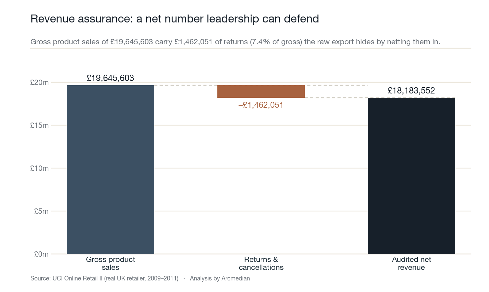
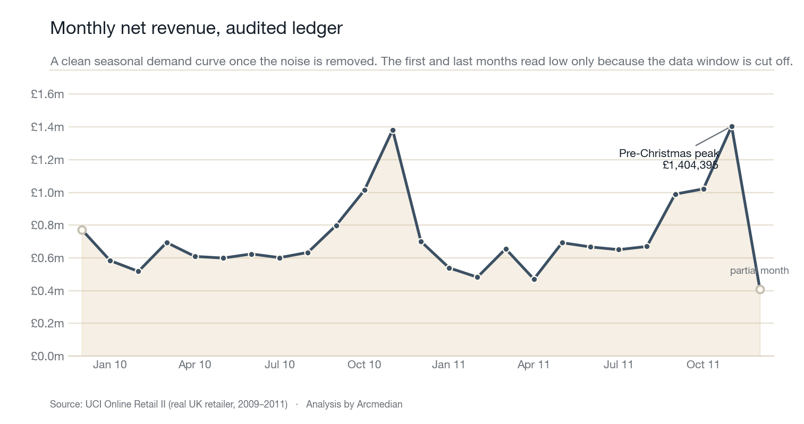
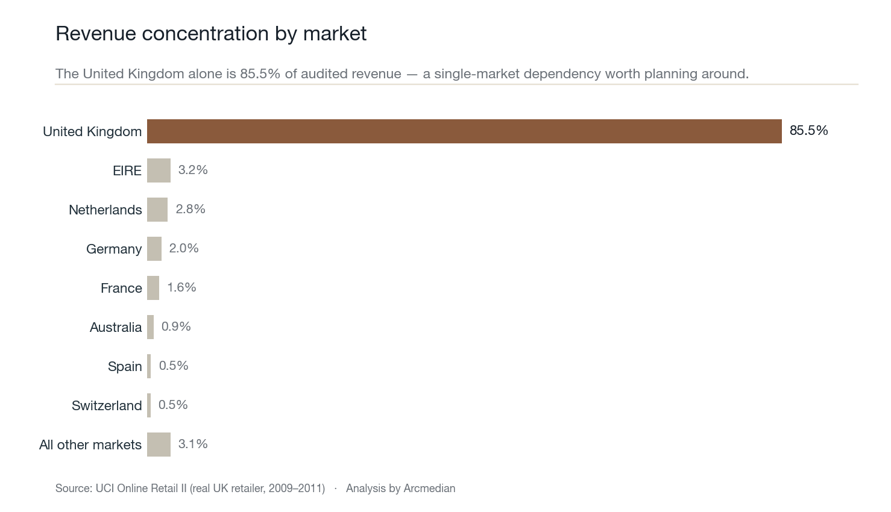
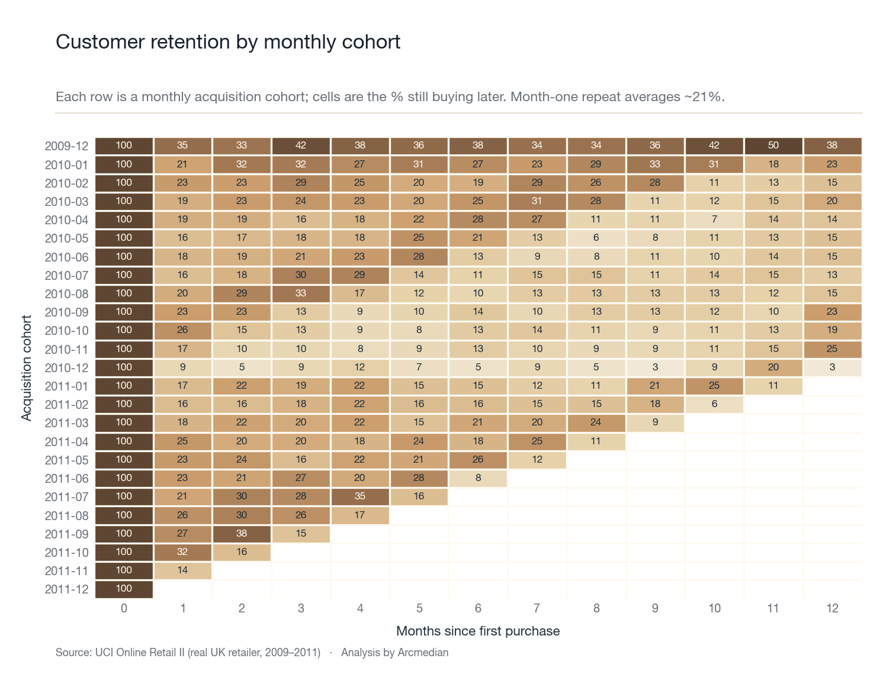
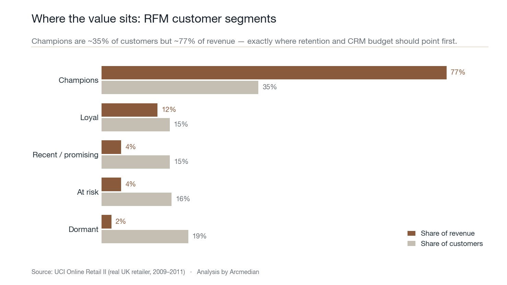

Report returns as their own line
Returns are 7.4% of gross and currently net silently against sales. Split gross, returns and net so the trading team can actually see the return trend and act on it.
Case study · Measurement integrity
A full worked analysis of a real UK online retailer's order ledger. I audited the data for the integrity problems that quietly distort commerce reporting, reconciled a trustworthy revenue base, then read the cohort and customer-value signal into a short decision memo. Every figure on this page is computed by code from the public file. Nothing is hand-entered.
The brief
A raw commerce export looks authoritative. It is a spreadsheet of orders with a number at the bottom. The trap is that the number at the bottom blends real sales with returns, cancellations, postage lines, manual adjustments, test rows and duplicate records — and a sizable share of the rows cannot even be tied to a customer.
Treat that file as truth and every downstream decision inherits the error: revenue is misstated, retention is computed on a fraction of the data, and the team argues about whose dashboard is right instead of what to do next. The job here was to replace that uncertainty with a documented, reproducible standard for what the data can actually prove.
01 · Audit
Working in Python, I profiled all 1,067,371 line items against a set of integrity rules before deleting a single row. The point is to measure the problem first, then clean with rules you can defend in a meeting, not silent drops nobody can trace.
| Integrity flag | Lines | Why it distorts reporting |
|---|---|---|
| Missing customer ID | 243,007 22.8% | Every retention, cohort and lifetime-value figure silently runs on three quarters of the trade. |
| Exact duplicate rows | 34,335 | Double-counts units and revenue if summed naively. |
| Cancellations & credit notes | 19,494 | Net against sales inside the file total, hiding the true return signal. |
| Negative or zero quantity | 22,950 | Returns, write-offs and corrections mixed in with demand. |
| Zero or negative price | 6,207 | Samples, debt adjustments and data errors that are not sales. |
| Non-product admin lines | 5,934 | Postage, bank charges, manual adjustments and test codes counted as revenue. |
Counts computed directly from the source file. A line can carry more than one flag.
02 · Reconcile
After applying documented cleaning rules — product sales only, positive quantity and price, duplicates removed, returns separated rather than buried — the picture resolves into three honest lines. The business did £19.65m of gross product sales, carried £1.46m of returns and credits (7.4% of gross), for £18.18m of audited net revenue.



03 · Interpret
With a clean customer-level ledger, the more valuable questions open up. I built monthly acquisition cohorts to measure whether new buyers come back, and an RFM model (recency, frequency, monetary) to see how concentrated revenue really is across the customer base.


04 · Advise
The deliverable is not a dashboard, it is judgement. Four moves the data supports, each tied to a number above.
Returns are 7.4% of gross and currently net silently against sales. Split gross, returns and net so the trading team can actually see the return trend and act on it.
Nearly a quarter of lines have no customer ID, so every retention and lifetime-value figure understates the base. Enforce customer capture at checkout and stitch guest orders before trusting any CLV number.
85.5% of revenue is one country. EIRE, the Netherlands and Germany are already proven at small scale — the lowest-risk growth is deepening markets that already convert.
Champions are ~35% of customers but ~77% of revenue, while month-one repeat is only ~21%. Lifting repeat purchase among existing buyers is cheaper growth than chasing more first orders.
How this was built
The whole analysis is a single documented Python script. It loads the public Excel file, runs the integrity audit, applies the cleaning rules, builds the cohort and RFM models, and renders every chart on this page in the Arcmedian palette. Re-run it and the same numbers come out. That is the standard Arcmedian holds client reporting to: if a figure cannot be reproduced from source, it does not get to drive a decision.
Source dataset (UCI) → Analysis script → Computed findings (JSON) →
Work with Arcmedian
This is the standard of work behind every Arcmedian engagement — and the kind of analysis I do for data and marketing-intelligence teams.